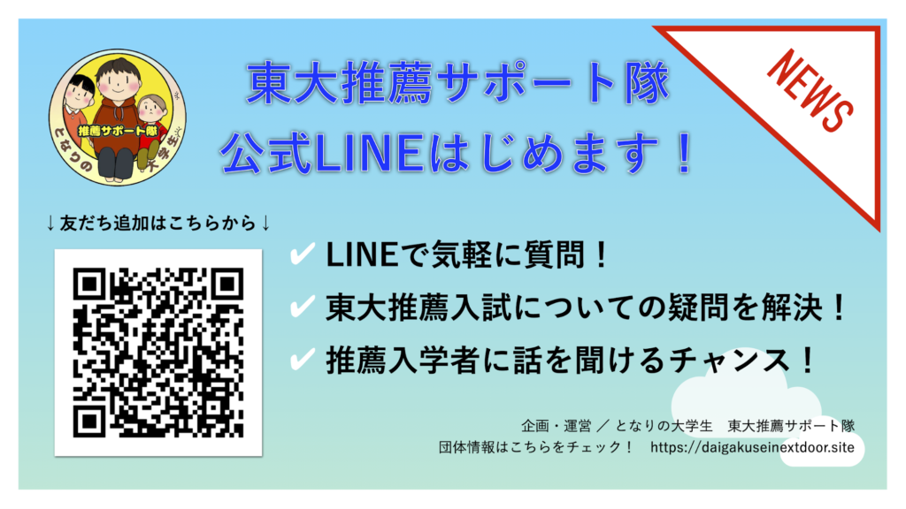

「東大推薦入試って、ハードルが高いんじゃない？」
「興味はあるけど、実際の準備はどのくらい大変なんだろう…」
「推薦で入学した先輩たちが、どんなポイントをアピールしたのか知りたい！」
そう思っているみなさん、いつも使っているLINEでまずは相談してみませんか？メンバーがみなさんからのご質問にお答えします！
さらに「もっと細かいことを知りたい！」という方には、似た条件で入学した方に話を聞けるよう、できる限りのサポートをさせていただきます。
少しでも東大推薦入試を考えている方は、まずは上の画像にあるQRコードかこちらから友だち追加してみてくださいね。みなさんからのご質問をお待ちしています！